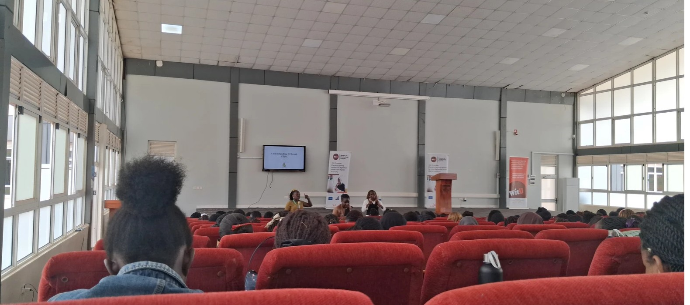
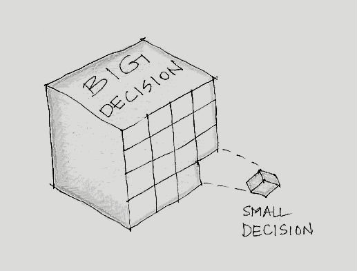
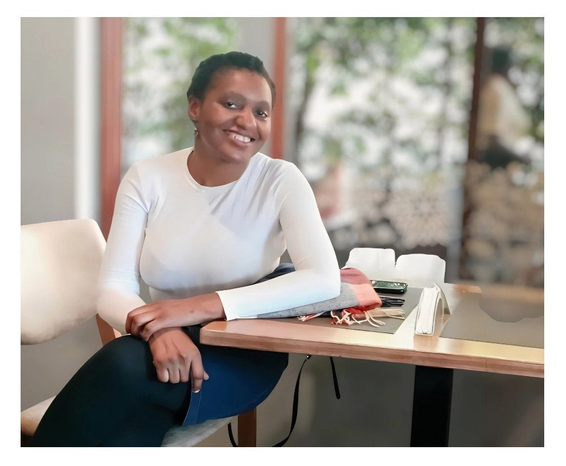

Add images/blog/mentors-and-mentees.jpg
A reflection for both mentors and mentees
By Hilda Grace Nalwanga · Feb 22, 2026
Mentorship has always played a quiet yet powerful role in shaping individuals, families, institutions, and even nations. Long before formal titles and public platforms...
Read More →

Add images/blog/beyond-the-noise-and-silence.jpg
Beyond the Noise and Silence
By Hilda Grace Nalwanga · Mar 1, 2026
A Three-Day Reflection on Stress, Self-Care, and Building a Strong Foundation for Marriage. Day 1: The Hidden Danger of Quick Fixes...
Read More →

Add images/blog/power-of-small-decisions.jpg
The Power of Small Decisions
By Hilda Grace Nalwanga · Feb 22, 2026
As I reflect on the image of the large cube labelled Big Decision and the small piece pulled away from it labelled Small Decision, I am reminded of a simple but often...
Read More →
Add images/blog/dying-rose.jpg
What Is Silencing Our Children? A Reflection from a Dying Rose
By Hilda Grace Nalwanga · Feb 22, 2026
In the middle of a small garden, I often stop to admire the roses. Their soft petals, gentle curves, and bold colors have a way of inviting stillness...
Read More →

Add images/blog/a-table-for-one.jpg
A Table for One
By Hilda Grace Nalwanga · Feb 22, 2026
I remember a season when life became very full. Full of responsibilities, expectations, meetings, service, planning, caring for others, and consistently showing up...
Read More →
Add images/blog/stages-faces-and-fares.jpg
Stages, Faces, and Fares, The Hidden Geniuses
By Hilda Grace Nalwanga · Feb 21, 2026
On Tuesday morning, I boarded a taxi and quietly observed the conductor at work. At every stage, they know who has just boarded, who has been in the taxi for a...
Read More →
Add images/blog/one-voice-one-team.jpg
One Voice, One Team: The Strength of Unity in Parenting
By Hilda Grace Nalwanga · Feb 15, 2026
In every strong institution, there's a force more powerful than talent and more impactful than strategy: it's teamwork. You've probably heard it before: "Great things...
Read More →

Add images/blog/leadership-quiet-strength.jpg
The Quiet Strength of a Leader Who Listens
By Hilda Grace Nalwanga · Aug 4, 2026
I once sat in a boardroom where the loudest voice was mistaken for the strongest leader. It took a crisis, months later, for the room to discover that the quietest person at that table had seen it coming all along...
Read More →

Add images/blog/the-language-of-safety.jpg
The Language of Safety: Why Policies Alone Don't Protect Children
By Hilda Grace Nalwanga · Aug 1, 2026
Every institution I have audited has a story about the policy that was never read. A safeguarding policy becomes real the moment a frightened child hears words they understand...
Read More →

Add images/blog/raising-roots-not-just-rules.jpg
Raising Roots, Not Just Rules
By Hilda Grace Nalwanga · Jul 28, 2026
"I have so many rules in my house, and yet my son still doesn't listen to me," a mother once told me. Rules without roots rarely survive adolescence...
Read More →